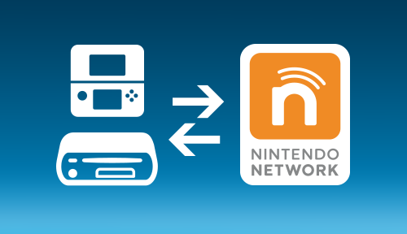
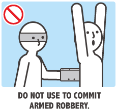

15 mars 2015
Récupérer les jeux dématérialisés de sa 3DS volée

À l'heure du tout dématérialisé, on ne sait plus tellement ce qui est fait de nos données, chaque service fonctionne différemment mais de plus en plus de bonnes pratiques se font. Dans le cas du jeu vidéo, Nintendo est un peu à la traine derrière ses concurrents. Depuis l'arrivée de la 3DS, Nintendo propose le compte « Nintendo Network ». Ce compte propose de relier sa console 3DS ainsi que Wii U pour acheter des jeux et applications dématérialisées. Le principal défaut du service est que les jeux et applications achetés ne sont toujours pas liés directement au compte mais à la console. Ainsi, il n'est pas possible de se connecter avec son compte Nintendo Network sur une nouvelle console et profiter de sa bibliothèque existante. Nintendo propose cependant un système pour transférer ses jeux d'une console à une autre, lors d'une nouvelle génération de console (voir mon article sur la New 3DS) ou de console à console si l'utilisateur décide de changer de modèle. Ce transfert est lourd, dans le sens où il faut disposer d'une connexion pour mettre à jour chaque console et faire le transfert du compte. D'une part le compte Nintendo Network sera dé-lié de la console source, les jeux seront sauvegardés sur la carte SD préparée pour la nouvelle console et la console source sera formatée.
Dans le cas d'un vol ou perte de sa console on s'imagine que c'est fini, aucun moyen de récupérer ses jeux... l'erreur à éviter (et j'imagine que beaucoup aurait ce réflexe) est de lier son compte Nintendo Network sur une nouvelle console. Cela fonctionne mais ne vous permet pas de récupérer vos jeux. Il faut contacter Nintendo via ce mail nnid@nintendo.fr (pour la France) en leur communiquant le numéro de série de votre ancienne console (perdue/volée), le numéro de série de la nouvelle console ainsi que votre pseudo Nintendo Network, la date d'anniversaire et le mail rattaché à ce compte. Vous pouvez retrouver le numéro de série de votre console sur le papier de garantie donné par le magasin ou encore sur la boite. Si vous n'avez rien de tout cela ou que vous n'avez pas noté le numéro de série il semble quand même possible pour Nintendo de retrouver la console, mais j'imagine que c'est plus lent. J'ai pour ma part contacté Nintendo pour effectuer cette opération et cela s'est bien déroulé. Attention cependant, il n'est pas possible de faire un transfert en arrière, c'est-à-dire de transférer d'une New Nintendo 3DS à une Nintendo 3DS classique. Limitation technique ou choix de Nintendo de se débarrasser des anciens modèles ? Vu cette impossibilité, j'ai du racheter une New Nintendo 3DS XL en revendant ma 3DS XL classique. Une fois le mail de confirmation de Nintendo reçu, vous pouvez re-lier votre compte Nintendo Network et vous aurez de nouveau accès aux téléchargements des titres dans l'eShop. Dans mon cas, la migration des titres s'est fait dans la journée du 11 mars et j'ai bien tout retrouvé (DSiWare, Console Virtuelle, 3DSWare, Certificat ambassadeur...). Je suis satisfait de l'assistance de Nintendo, mais si cela m'a permis de retrouver mes jeux, il n'en est rien des sauvegardes associées et il serait bien que Nintendo propose prochainement un système de sauvegarde en ligne comme le fait déjà Steam par exemple.
Commentaires 46